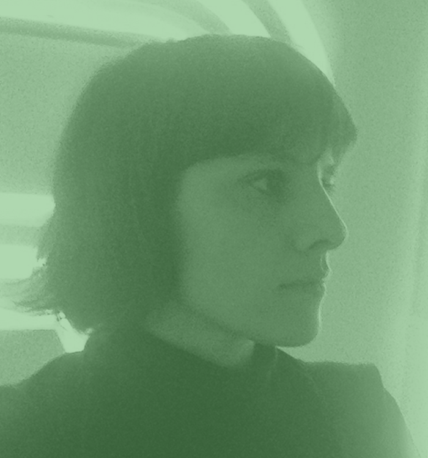

Joana Monteiro
Nome: Joana Teles Monteiro
Nacionalidade: Portuguesa
Telefone: +351 914488658
Email: joana.monteiro@gmail.com
Site: www.joanamonteiro.pt
A Joana é designer gráfica e faz direcção de arte.
No seu trabalho reconhece-se uma paixão pela tipografia. Para construção de imagens gráficas faz uso e
mistura várias técnicas.
Licenciou-se em Pintura e Design de Comunicação (ARCA, Coimbra). Fez o mestrado em Design Gráfico (University of the Arts London). Estudou na Royal College of Art, Londres, onde experimentou vídeo e tipografia tradicional. Colaborou com o atelier FBA. em Coimbra durante 5 anos.
É freelancer desde 2007 e tem trabalhado sobretudo com clientes da área da cultura (TNSJ, Porto; English Touring Opera, Londres; TAGV, Salão Brazil, JACC — Jazz ao Centro Clube e CAPC — Círculo de Artes Plásticas de Coimbra, Coimbra). Ganhou o prémio AIGA Justified em 2013; o prémio Sebastião Rodrigues, do Ano do Design Português, em 2014; Communication Arts Award of Excellence 2019. É co-fundadora do Clube dos Tipos, colaborando com Rui Damasceno, da Tipografia Damasceno. Fundadora da Editora dos Tipos, chancela através da qual publicou em 2016 o Manual Prático do Tipógrafo (que recebeu o “Certificate of Typographic Excellence”, Type Directors Club, Typography 38), em 2017, em conjunto com a Xeréfe, Clube Mediterrâneo – doze fotogramas e uma devoração, e em 2019 Tipografia Damasceno: 50 anos. Trabalha em Coimbra, no espaço/ateliê ME S.A. — Mesa Expandida Sociedade Aberta.
Licenciou-se em Pintura e Design de Comunicação (ARCA, Coimbra). Fez o mestrado em Design Gráfico (University of the Arts London). Estudou na Royal College of Art, Londres, onde experimentou vídeo e tipografia tradicional. Colaborou com o atelier FBA. em Coimbra durante 5 anos.
É freelancer desde 2007 e tem trabalhado sobretudo com clientes da área da cultura (TNSJ, Porto; English Touring Opera, Londres; TAGV, Salão Brazil, JACC — Jazz ao Centro Clube e CAPC — Círculo de Artes Plásticas de Coimbra, Coimbra). Ganhou o prémio AIGA Justified em 2013; o prémio Sebastião Rodrigues, do Ano do Design Português, em 2014; Communication Arts Award of Excellence 2019. É co-fundadora do Clube dos Tipos, colaborando com Rui Damasceno, da Tipografia Damasceno. Fundadora da Editora dos Tipos, chancela através da qual publicou em 2016 o Manual Prático do Tipógrafo (que recebeu o “Certificate of Typographic Excellence”, Type Directors Club, Typography 38), em 2017, em conjunto com a Xeréfe, Clube Mediterrâneo – doze fotogramas e uma devoração, e em 2019 Tipografia Damasceno: 50 anos. Trabalha em Coimbra, no espaço/ateliê ME S.A. — Mesa Expandida Sociedade Aberta.
